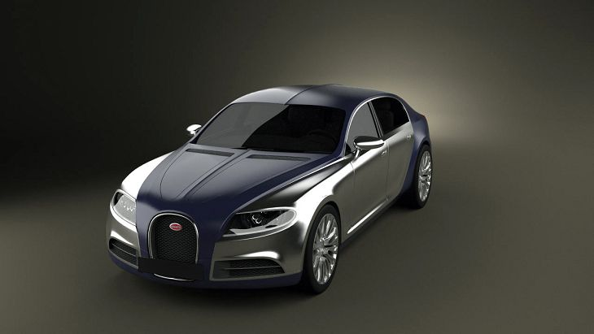

Truffade 16C Galibier
El Truffade 16C tiene un diseño similar al del Veyron. Sobre todo por las dos tonalidades posibles, con las que se presentó: Cromo y azul oscuro. Es caracterizado también por la rejilla delantera (al igual que el Veyron), y los faros, que nacen del tramo azul del frontal. Otra característica, es que el capó está dividido en dos secciones que se abren oblicuamente.